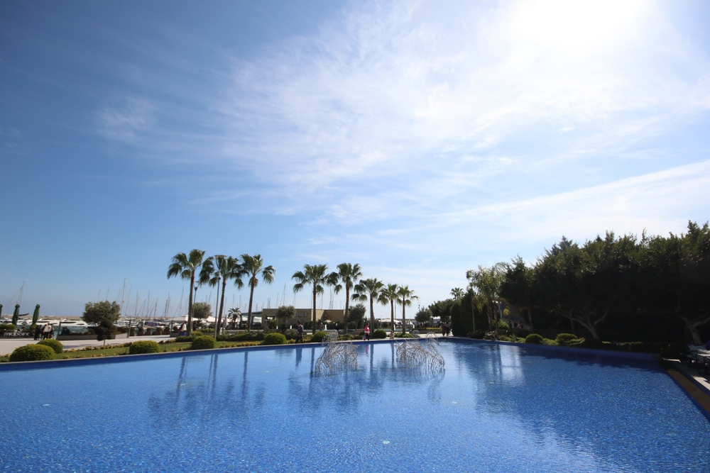
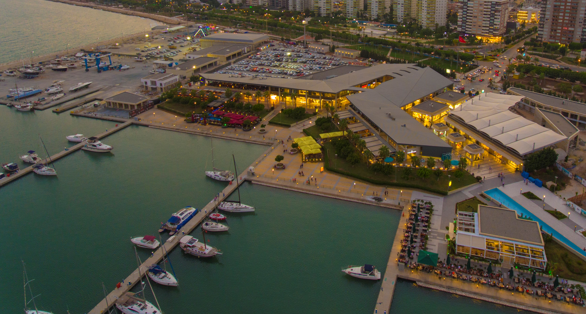
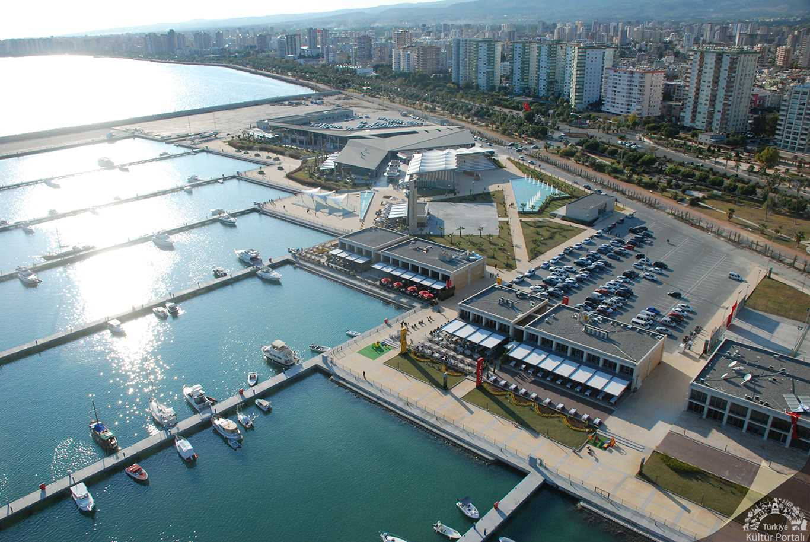

Adnan Menderes Bulvarı üzerinde ve sahil şeridinin merkezinde bulunan Mersin Marina, 1000 yat bağlama kapasitesine sahip olmasıyla dikkat çekiyor. Yat sahiplerinin ihtiyaçlarını cömert bir şekilde karşılayan marina, Mersin halkı için en popüler buluşma noktalarının arasında da bulunuyor. 2017 yılında mavi bayrak ödülü alan marina, muhteşem bir manzaraya sahip. Marina içerisinde her istek ve ihtiyacı karşılayabilecek farklı restoran ve kafeler bulunuyor. Bunun yanı sıra lüks restoranlar, giyim mağazaları ve eğlence mekanları ile de hem gece hem de gündüz saatlerinde canlılığını koruyan Mersin marina, geniş bir otoparka da sahip. Böylelikle şahsi aracıyla yolculuk yapanlar adına da oldukça önemli bir fırsat sunuyor. Deniz manzaralı restoranlarda canlı müzik eşliğinde yeme içme ihtiyacınızı karşılayabileceğiniz Mersin Marina, Mersin tatilinizi çok daha keyifli hale getiriyor.
  